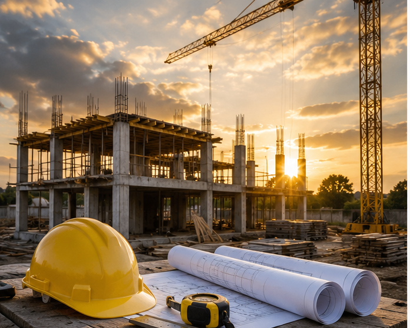
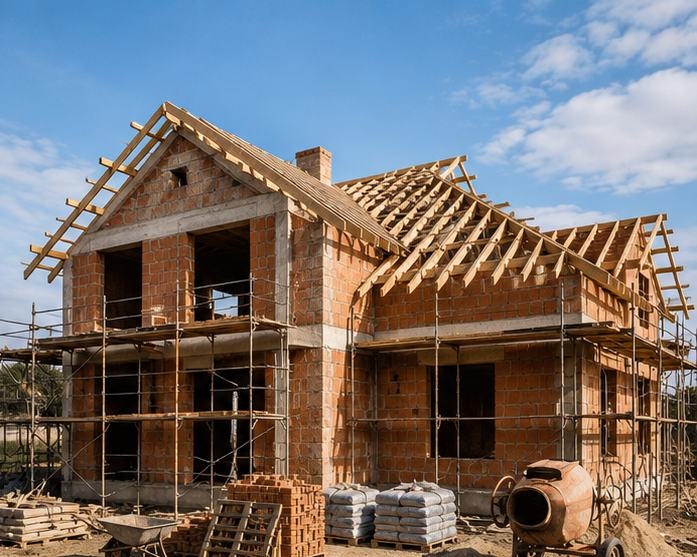
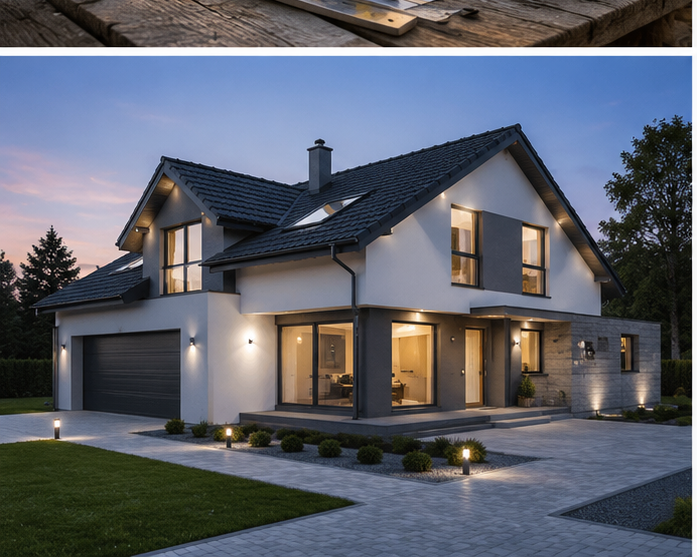
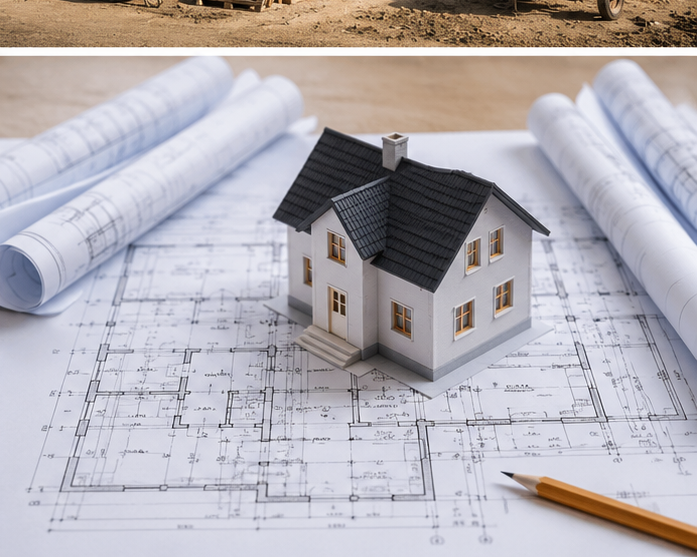

La roșu
Fundație, zidărie, cadre și acoperiș.
Exemplu de site solid pentru firmă de construcții: etape clare, portofoliu, servicii și cerere rapidă de ofertă.
Cere o estimare
Proiectare și planificare
Fundație și structură
Instalații și finisaje
Predare la cheie
Fundație, zidărie, cadre și acoperiș.
Electrică, sanitare, încălzire și pregătiri.
Tencuieli, glet, pardoseli și finisaje.
Detalii finale, verificare și predare.


Casă modernă P+1
Un site de construcții poate prezenta clar etapele, proiectele finalizate și modul de lucru, astfel încât clientul să înțeleagă rapid ce servicii primește.
În site-ul real putem integra formular pentru suprafață, buget, localitate și stadiul proiectului.
Vreau un site asemănător← Înapoi la Făurit de Busuioc